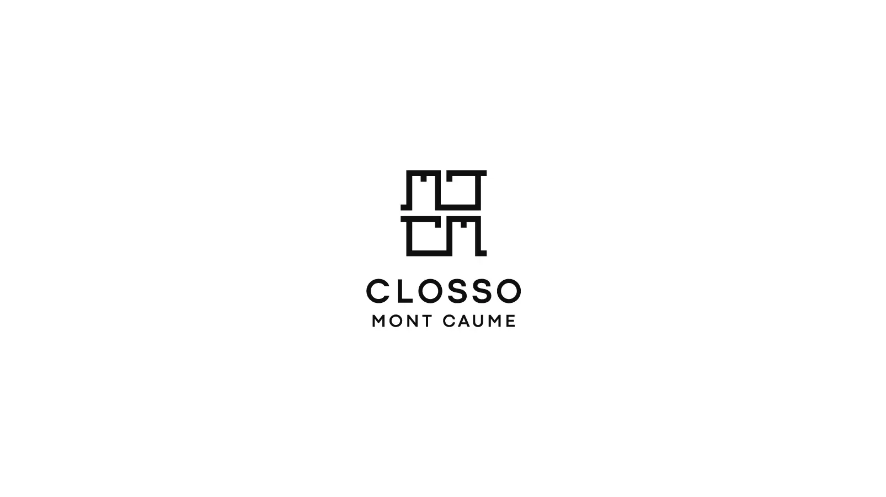
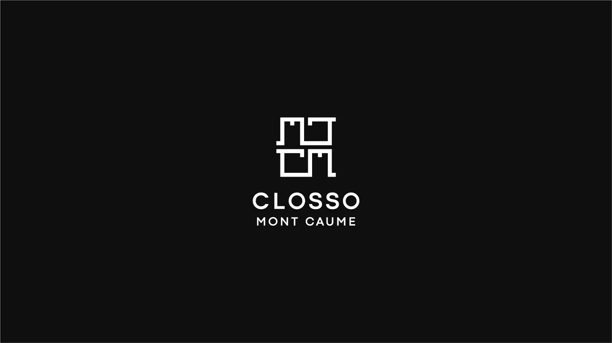
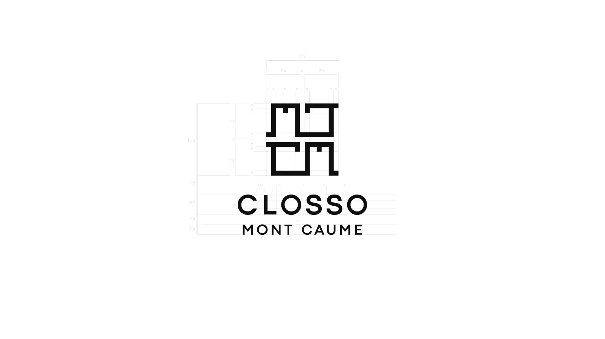

Closso Mont Caume — Création de Logo & Identité Visuelle
Tony Reynaud prépare à la main de délicieux antipasti avec des produits locaux de qualité exceptionnelle, telles que les olives de Provence dans un chariot en bois traditionnel. L'inspiration vient du Mont Caume, qui est le plus haut des monts toulonnais. Création de l'identité visuelle avec son logo, les habillages du chariot, la jupe et le calicot du stand.
Présentation du Logo
Le logo est moderne, sobre et structuré et rappelle subtilement les lignes des fortifications du Mont Caume.



Parlons de votre projet